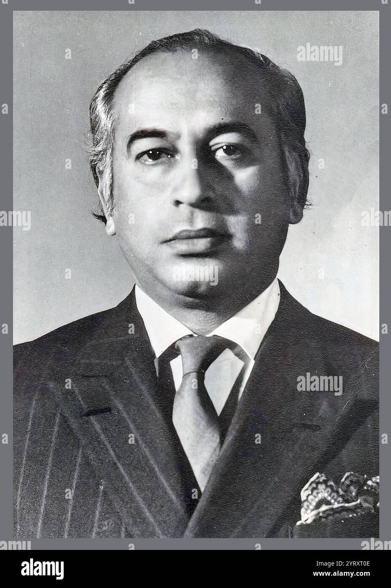

|

Officials stated that the nation must remain peaceful as major
developments unfold. Authorities have increased monitoring in
sensitive areas to prevent disorder.
Government sources confirmed that new reforms will affect the
education system, economic structure, and public welfare programs.
Analysts believe that these steps may strengthen national stability,
though political tensions remain high.
- Political Update
- Economic Impact
- Public Reaction
|
Historic Event Creates Nationwide Impact
THE DAILY NEWS
A historic political decision was announced today that has shocked the
entire nation. Officials confirmed that the verdict marks one of the most
dramatic moments in the country’s leadership history.
Government representatives stated that strict security measures have been
enforced across major cities to prevent unrest. Citizens have been urged
to remain calm and avoid spreading unverified information.
Legal analysts believe that this case will influence future constitutional
decisions and may reshape political dynamics for decades.
International observers are closely monitoring the situation, calling it a
turning point in the region’s democratic development.
The political atmosphere remained tense today after the announcement of
the Prime Minister’s sentencing. Large crowds gathered outside government
buildings, while law enforcement remained on high alert.
Senior officials emphasized that the decision was reached after lengthy
legal proceedings and that the rule of law must be respected. Supporters
of the Prime Minister, however, described the judgment as controversial
and demanded further review.
Meanwhile, opposition leaders declared that the country must now focus on
stability and democratic continuity. Parliament is expected to hold an
emergency session later this week to discuss the future political roadmap.
Economists warned that uncertainty could affect national markets and
foreign investment. Business communities urged authorities to ensure calm
conditions so that economic activity does not suffer.
On the international front, several global leaders expressed concern and
called for peaceful resolution through constitutional channels. Diplomatic
missions in the capital have increased monitoring of public reaction.
In other developments, education reforms announced by the government aim
to improve literacy and modernize universities. Officials stated that
technological innovation and national development remain key priorities.
Sports news also brought some relief, as the national cricket team began
preparations for an upcoming international tour. Young players have been
added to the squad, creating optimism among fans.
Analysts conclude that today’s decision will be remembered as a defining
chapter in national history. Citizens now await the next steps with hope,
uncertainty, and deep attention to the country’s future direction.
|